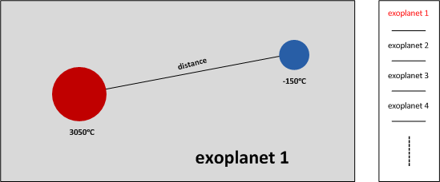

Motive:
As a developer, one of the big challenges is how to understand which part of data in the dataset is interested for audiences. Different audiences would have different taste of the data. Even for the same audiences, the type of their interesting data still would be changed from a different perspective. To resolve this issue, a general draw board is designed as shown above. Audiences can pick up their interesting data and show them in the canvas by a simple operation. Except for some special data type, like binary data, string data, most types of data are suitable to be displayed on this facility. Besides, in case some audiences are interested in the precise value of the data, the real value of the data should be listed as well.

Design:
As shown in the above sketch, this draw board facility is divided into three parts. The top left part is data picking up area, where audiences can pick up their interesting data. The centre part is drawing area, where the picked data is drawn with some drawing option, e.g. the chart type, the line colour, etc. These options can be set in an options panel by clicking the options button. The right side is a data list area, where the real value of the data is shown. Audiences can see their interesting data item in the list.
Feature:
The most data types in the dataset can be shown in the same place. Provide the real data value as well. The x-axis represents the found year sorted by time. Y-axis represents the value of data. Many options for a nice chart, e.g. line chart, scatter chart, line colour, scatter colour.
Data Process:
Remove non-numeric data from the dataset. Remove the exoplanets which are not been confirmed. Remove the exoplanets which have the missing value before drawing a graph. For example, the exoplanets whose mass value is missed should be removed from the data source when drawing the mass plot.
Focused data:
The data used in this design are listed as below. Planetary mass [Jupiter masses]. Radius [Jupiter radii]. Period [days]. Semi-major axis [Astronomical Units]. Eccentricity. Periastron [degree]. Longitude [degree] . Ascending node [degree] . Inclination [degree]. Surface or equilibrium temperature [K]. Age [Gyr]. Discovery year [yyyy]. Right ascension [hh mm ss]. Declination [+/-dd mm ss]. Distance from Sun [parsec]. Host star mass [Solar masses]. Host star radius [Solar radii]. Host star metallicity [log relative to solar]. Host star temperature [K]. Host star age [Gyr].
Motive: In the exoplanet research fired, the most exciting thing is finding a planet that is suitable for creature habitation, like the earth we live. As we know, the temperature is the most important thing for creature living and it is highly affected by the host star’s temperature, the distance from the host star and the mass of both. So a graph which can represent the relationship between the distance, temperature and mass is designed as below.
Design: As shown in the below graph, the red ball represents the host start and the blue ball represents the exoplanet. The size of them is represented by the radius of the ball. The temperature is marked under the ball, and the distance between the start and exoplanet is represented by the distance between the ball in the graph. By this graph, the audiences can easily understand the relationship between the host star and the exoplanet.
Feature:
Visualisation the relationship between the host star and exoplanet. Any exoplanet can be shown in this canvas by dragging it from the right side box and dropping it into the left side canvas.
Data Process:
Remove the exoplanets which are not confirmed. Remove the exoplanets whose relevant data is missing.
Focused Data
Radius [Jupiter radii]. Surface or equilibrium temperature [K]. Distance from Sun [parsec]. Host star temperature [K].